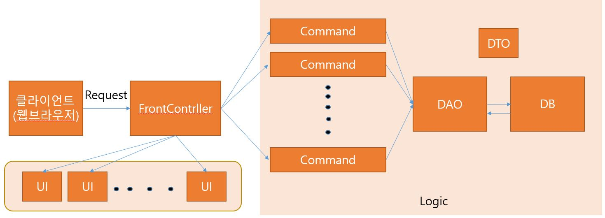

게시판 CRUD
게시판 CRUD
jsp를 마무리 하면서 전체적인 기능들을 살펴보았다.
전체적인 컴포넌트 설계

- 모든 요청은 일단 Controller로 간다.
- Controller단 에서 DB에 대한 접근이 필요하다면 Command로 간다.
- Command 단에서는 Dao에 대한 접근과 필요하다면 화면에 DB에 대한 정보를 JSP로 넘기기위해 request.setAttribute 사용
이제 전체적인 코드를 살펴보자.
BFrontController.java
@WebServlet("*.do")
- Servelt mapping을 하기위해 선언되었다.
- mapping을 하는 이유는 보안 때문이다.
기존경로가 http://localhost:8080/프로젝트명/servlet/패키지명.클래스명 이라고 자세히 정보를 나타내게되면 보안상으로 취약하다고한다. - 그래서 http://localhost:8080/프로젝트명/URL명 으로 간단하게 변경 하는 것이다.
- .jsp는 localhost:8080/프로젝트명/파일명.jsp 치면 나오지만
.java 파일은 그렇지 않다.
(매핑 없이 실행해보면 그 경로의 파일을 찾지 못한다고 오류가 난다. )
그래서 실행할 수 있도록 매핑을 하는 것이고,
그 매핑을 함으로써 .jsp에서 매핑된 이름으로 .java 파일에 요청을 보낼 수 있다고 한다. - 또한 mapping방법은 @(어노테이션 뿐만아니라) WebContent폴더 안에 web.xml 파일을 이용해 등록하는 방법도 있다.
public class BFrontController extends HttpServlet {
private static final long serialVersionUID = 1L;
public BFrontController() {
super();
}
protected void doGet(HttpServletRequest request, HttpServletResponse response) throws ServletException, IOException {
actionDo(request,response);
}
protected void doPost(HttpServletRequest request, HttpServletResponse response) throws ServletException, IOException {
actionDo(request,response);
}
- HttpServlet을 상속받는 클래스는 doGet, doPost 메소드를 오버라이딩할 수 있기에 이 클래스는 서블릿으로 동작할 수 있다.
- 그리고 doGet, doPost 메서드는 모두 HttpServletRequest와 HttpServletResponse 객체를 매개변수로 가지고 있다.
- 이 두 객체는 서블릿과 클라이언트 사이를 연결해주는 중요한 객체들이다.
private void actionDo(HttpServletRequest request, HttpServletResponse response) throws ServletException, IOException {
request.setCharacterEncoding("UTF-8");
String viewPage = null; //최종적으로 페이지가 호출될것인지
BCommand command =null;//model객체로 부터 로직을수행하기위함
String uri = request.getRequestURI();
String conPath = request.getContextPath();
String com = uri.substring(conPath.length());
if(com.equals("/write_view.do")) {
viewPage = "write_view.jsp";
}else if(com.equals("/write.do")) {
command = new BWriteCommand();
command.execute(request,response);
viewPage = "list.do";
}else if(com.equals("/list.do")) {
command = new BListCommand();
command.execute(request,response);
viewPage = "list.jsp";
}else if(com.equals("/content_view.do")) {
command = new BContentCommand();
command.execute(request,response);
viewPage = "content_view.jsp";
}else if(com.equals("/modify.do")) {
command = new BModifyCommand();
command.execute(request,response);
viewPage = "list.do";
}else if(com.equals("/delete.do")) {
command = new BDeleteCommand();
command.execute(request,response);
viewPage = "list.do";
}else if(com.equals("/reply_view.do")) {
command = new BReplyViewCommand();
command.execute(request,response);
viewPage = "reply_view.jsp";
}else if(com.equals("/reply.do")) {
command = new BReplyCommand();
command.execute(request,response);
viewPage = "list.do";
}
RequestDispatcher dispatcher = request.getRequestDispatcher(viewPage);
dispatcher.forward(request, response);
}
- actionDo 메서드는 요청에 맞는 Command로 보내는 역할을 한다.
- request.getRequestURI()에는 /패키지명/매핑명 을 가지고있고
- request.getContextPath()에는 /패키지명 있기에
- uri.substring(conPath.length())는 결국 /매핑명만 가지게 된다.
- 이렇게 매핑명만 분리해서 문자열 비교로 해당 요청에맞는 command로 넘겨주게 된다.
- RequestDispatcher는 앞서 command에서 가공된 DB값들을 가지고 View단으로 넘겨주는 역할을 한다.
BCommand.java
public interface BCommand {
void execute(HttpServletRequest request, HttpServletResponse response);
}
- 해당 기능을 강제로 구현함과 메서드명을 통일함으로 interface 사용
- 모든 Command는 BCommand를 상속 한다.
- request, response 객체를 사용하기 위함
BWriteCommand.java
public class BWriteCommand implements BCommand{
@Override
public void execute(HttpServletRequest request, HttpServletResponse response) {
// TODO Auto-generated method stub
String bName = request.getParameter("bName");
String bTitle = request.getParameter("bTitle");
String bContent = request.getParameter("bContent");
BDao dao = new BDao();
dao.write( bName, bTitle, bContent);
}
}
BListCommand.java
public class BListCommand implements BCommand {
@Override
public void execute(HttpServletRequest request, HttpServletResponse response) {
// TODO Auto-generated method stub
BDao dao = new BDao();
ArrayList<BDto> dtos = dao.list();
request.setAttribute("list", dtos);
}
}
BContentCommand.java
public class BContentCommand implements BCommand {
@Override
public void execute(HttpServletRequest request, HttpServletResponse response) {
// TODO Auto-generated method stub
String bId = request.getParameter("bId");
BDao dao = new BDao();
BDto dto = dao.contentView(bId);
request.setAttribute("content_view", dto);
}
}
- Main화면에서 여러개의 글 목록중 특정 글에대한 정보를 출력하기 위한 클래스
- .jsp 단에서 value에 저장된값을 dao로 넘겨줌
BModifyCommand.java
public class BModifyCommand implements BCommand {
@Override
public void execute(HttpServletRequest request, HttpServletResponse response) {
// TODO Auto-generated method stub
String bId = request.getParameter("bId");
String bName = request.getParameter("bName");
String bTitle = request.getParameter("bTitle");
String bContent = request.getParameter("bContent");
BDao dao = new BDao();
dao.modify(bId, bName, bTitle, bContent);
}
}
BDeleteCommand.java
public class BDeleteCommand implements BCommand {
@Override
public void execute(HttpServletRequest request, HttpServletResponse response) {
// TODO Auto-generated method stub
String bId = request.getParameter("bId");
BDao dao = new BDao();
dao.delete(bId);
}
}
- 순서대로 C, R(글 전체출력,세부정보출력), U, D
- Read 같은경우는 Dao를 통해 가져온 값들을 화면상에 출력해주어야하기에 request.setAttribute에 값을 담아서 보냄
- Create Update는 화면단에서 입력된 값들을 DB상에 저장하기위해 request.getAttribute로 값을 받아서 Dao로 보냄
- Update,Delete, Read(세부정보출력)시 특정 글의 id값을 가져와서 Dao로 보냄
BDao.java
DataSource dataSource;
public BDao() {
try {
Context context = new InitialContext();
dataSource = (DataSource) context.lookup("java:comp/env/jdbc/Oracle11g");
}catch(Exception e) {
e.printStackTrace();
}
}
- DBCP를 사용하기위해 Tomcat context.xml에 설정한 DB 정보들 java코드로 연결하기
위해 JNDI(Java Naming and Directory Interface) 자바 네이밍 API를 사용한다. 네이밍 패키지의 클래스를 가지고 이름으로 객체를 획득하는 것을 말한다.
쉽게말해 이름을 이용해서 원하는 정보 혹은 자원(Connection)을 찾을 수 있는 서비스
public void write(String bName, String bTitle, String bContent) {
Connection connection = null;
PreparedStatement psmt = null;
try {
connection = dataSource.getConnection();
String query = "insert into mvc_board (bId, bName, bTitle, "
+ "bContent, bHit, bGroup, bStep, bIndent)"
+ "values (mvc_board_seq.nextval, ?, ?, ?, 0, mvc_board_seq.currval, 0, 0)";
psmt = connection.prepareStatement(query);
psmt.setString(1, bName);
psmt.setString(2, bTitle);
psmt.setString(3, bContent);
int rn = psmt.executeUpdate(); //정상적으로 insert시 1반환
}catch (Exception e) {
// TODO: handle exception
e.printStackTrace();
}finally {
try {
if(psmt != null)psmt.close();
if(connection != null) connection.close();
}catch (Exception e2) {
e2.printStackTrace();
}
}
}
- SQL문장을 실행시키기 위해 Connection 객체에 위에서 생성한 db정보를 넘겨준다.
- 문자열로 쿼리를 작성하는데 ?자리는 매개변수로 받아온 값들이 들어갈수있도록 setString 메서드로 처리한다.
setString(정수(물음표 자리), 값) - executeUpdate로 정상적으로 쿼리가 실행되었다면 정수값 1을 리턴한다.
- catch에서는 예외처리
- finally에서는 메모리 해제 & 예외처리를 한다.
- Update와 Delete도 이와 비슷한 구조로 처리가 되어 따로 기록하진않았다.
public ArrayList<BDto> list(){
ArrayList<BDto> dtos = new ArrayList<BDto>();
Connection connection = null;
PreparedStatement psmt = null;
ResultSet rs = null;
try {
connection = dataSource.getConnection();
String query = "select bId, bName, bTitle, bContent, bDate, bHit, bGroup, bStep, bIndent "
+"from mvc_board "
+"order by bGroup desc, bStep asc";
psmt = connection.prepareStatement(query);
rs = psmt.executeQuery();
while(rs.next()) {
int bId = rs.getInt("bId");
String bName = rs.getString("bName");
String bTitle = rs.getString("bTitle");
String bContent = rs.getString("bContent");
Timestamp bDate = rs.getTimestamp("bDate");
int bHit = rs.getInt("bHit");
int bGroup = rs.getInt("bGroup");
int bStep = rs.getInt("bStep");
int bIndent = rs.getInt("bIndent");
BDto dto = new BDto( bId, bName, bTitle, bContent, bDate, bHit, bGroup, bStep, bIndent );
dtos.add(dto);
}
}catch (Exception e) {
e.printStackTrace();
}finally {
try {
if(rs != null) rs.close();
if(psmt != null) psmt.close();
if(connection != null) connection.close();
}catch(Exception e2) {
e2.printStackTrace();
}
}
return dtos;
}
- 글 목록을 출력하는 Dao 부분이다.
- ResultSet은 Select의 결과 값을 저장하는 객체이고, 데이터타입은 dto이며,
ArrayList를 사용, 각각의 글에대한 정보들을 담아 ReturnType으로 넘겨 준다.